Transformamos a superfície.
Preservamos o que ainda funciona.
Aplicação especializada de revestimentos 3M™ DI-NOC™ em paredes, portas, painéis, tetos e mobiliário — da preparação da superfície ao acabamento final.
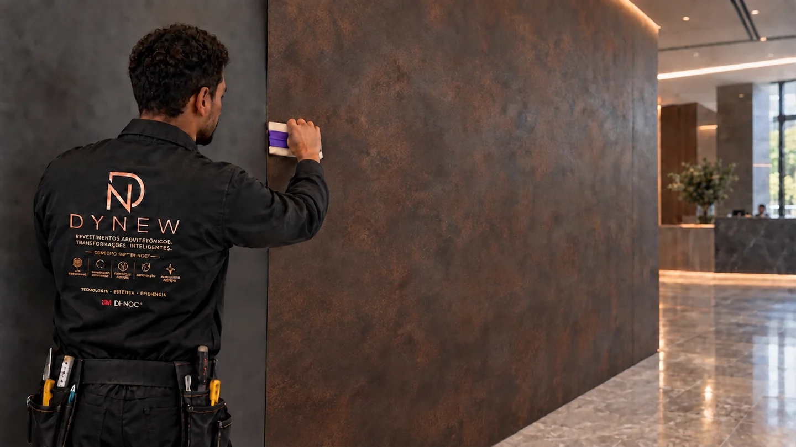
Antes de substituir, avalie o que ainda pode ser renovado.
Substituir
- Desmontagem
- Descarte
- Transporte de novos elementos
- Maior quantidade de etapas
- Possível aumento de peso
- Maior interferência na operação
Manter como está
- Acabamento desgastado
- Aparência desatualizada
- Perda de percepção de valor
- Incompatibilidade com a identidade do ambiente
Revestir
- Preservação da estrutura funcional
- Transformação estética
- Intervenção mais limpa
- Menor geração potencial de resíduos
- Menor peso adicional
- Menor interferência
- Diferentes possibilidades de acabamento
Quando a estrutura pode permanecer, a superfície assume o projeto.
Preservar estruturas existentes também pode significar menos retirada de material, menos descarte e menor interferência de obra.
A estrutura é a mesma.
A percepção muda por completo.
O revestimento atualiza a superfície sem exigir a substituição integral do elemento existente. O resultado depende da condição da base, da preparação e da aplicação correta.
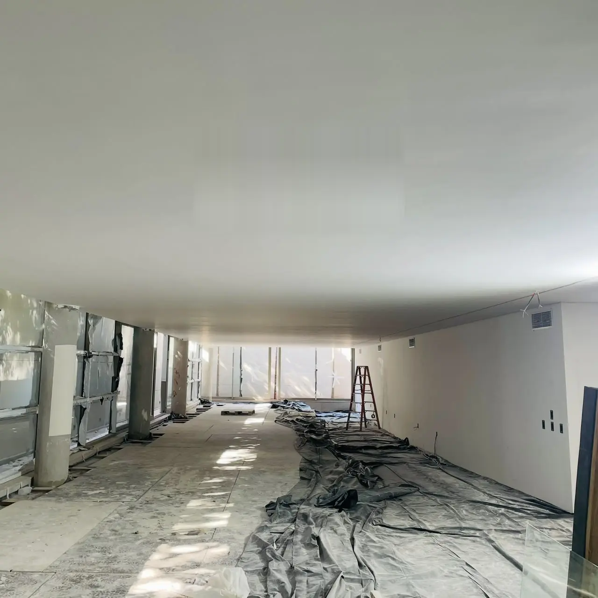
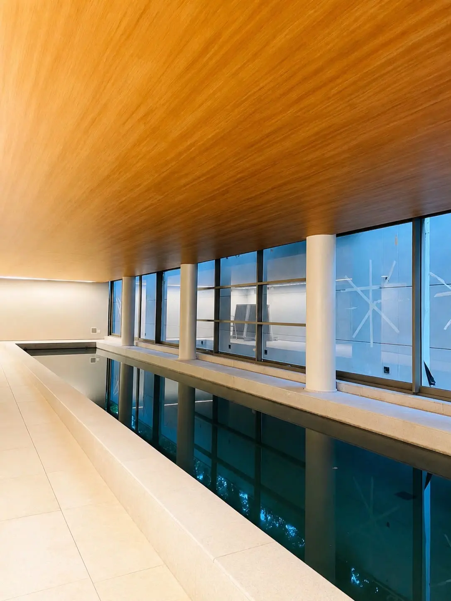
Caso real: teto em concreto aparente revestido com acabamento amadeirado 3M™ DI-NOC™.
3M™ DI-NOC™ Architectural Finishes
Mais de 900 possibilidades para transformar o que já existe.
Madeiras, metais, pedras, concretos, tecidos, cores e acabamentos de alta performance ampliam as possibilidades de projeto sem exigir que tudo seja demolido e substituído.
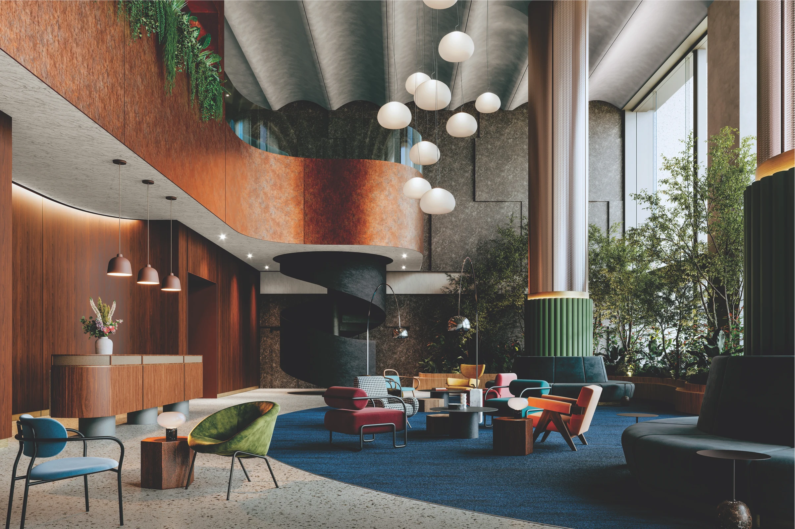
Portfólio global 3M™ DI-NOC™. Coleções e códigos sujeitos à disponibilidade.
Toque em um material
para ver código e família 3M™ DI-NOC™
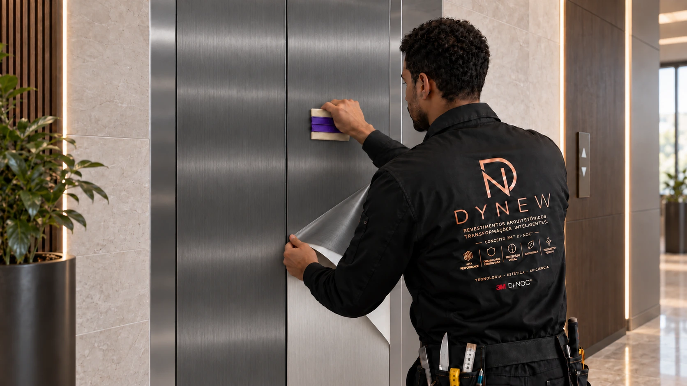
Quem é a DYNEW
Uma nova empresa. 17 anos de experiência por trás dela.
A DYNEW nasce com uma proposta clara: elevar a transformação de superfícies ao universo do revestimento arquitetônico decorativo.
Embora seja uma nova empresa, sua origem está apoiada em 17 anos de experiência profissional na comunicação visual, incluindo uma trajetória consistente com adesivos decorativos, aplicações técnicas e diferentes soluções para superfícies.
Essa experiência acumulada encontra agora uma nova direção, mais especializada e arquitetônica. Como aplicadora certificada 3M™ DI-NOC™, a DYNEW une conhecimento de execução, tecnologia, inovação e acabamento de alto padrão para renovar ambientes e elementos existentes com menor interferência de obra e maior aproveitamento das estruturas.
É a combinação entre experiência de campo e uma visão contemporânea de revestimento: preservar o que ainda funciona e transformar o que pode evoluir.
O material importa. A execução define o resultado — da leitura do substrato à verificação final.
Acabamento no teto sem transformar o visual em uma estrutura pesada.
Tetos tecnicamente compatíveis podem receber aparência amadeirada, metálica ou mineral com muito menos peso adicional do que determinadas soluções rígidas de acabamento.
- Menor peso adicional
- Preservação da estrutura existente
- Continuidade entre teto e paredes
- Intervenção potencialmente mais limpa
O revestimento não substitui avaliação estrutural, não resolve infiltração ou umidade e não garante isolamento térmico ou acústico — a aplicação depende de avaliação técnica.
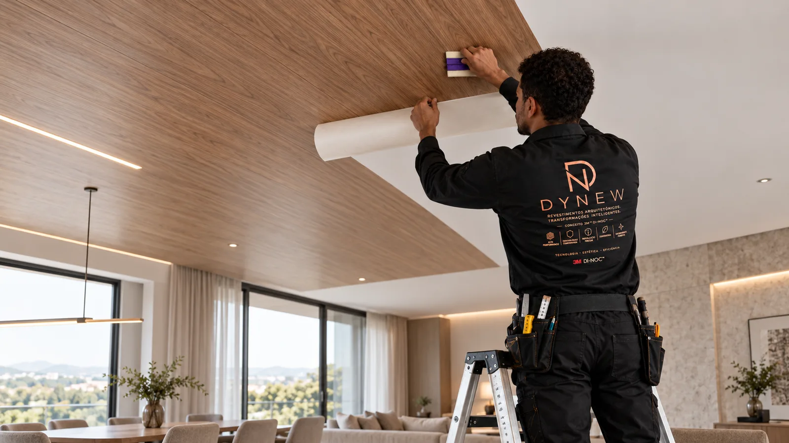
Onde a transformação pode acontecer
O revestimento arquitetônico atende diferentes elementos e tipos de projeto — a compatibilidade de cada superfície é sempre avaliada tecnicamente.
-
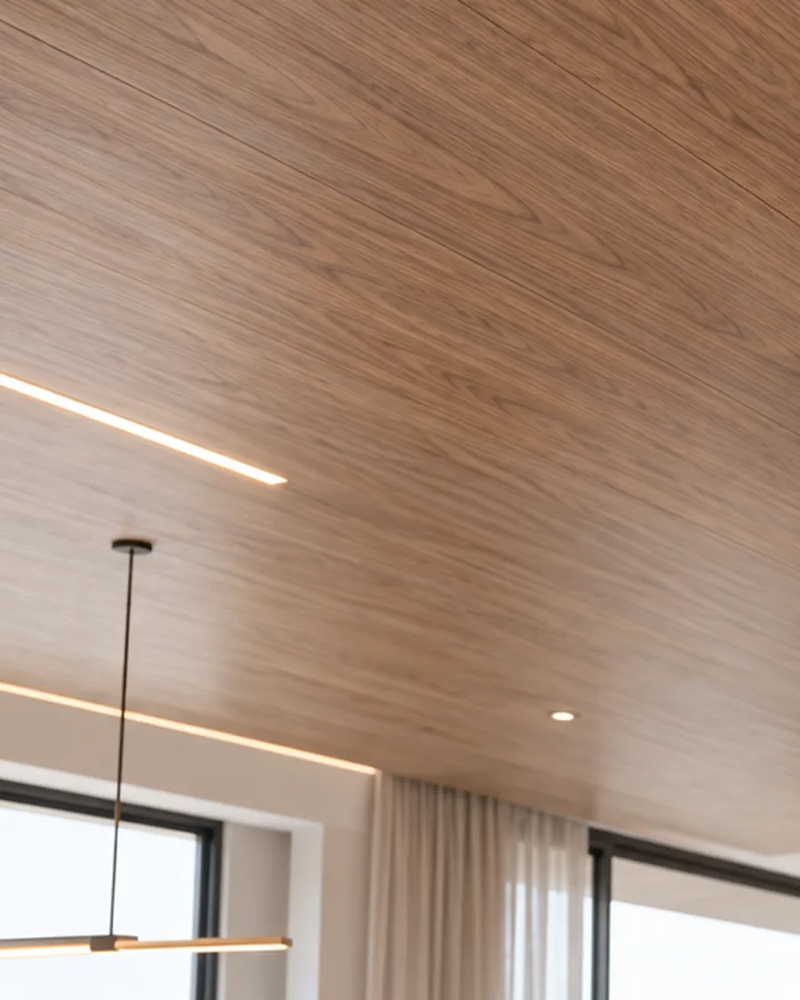
01Tetos
-
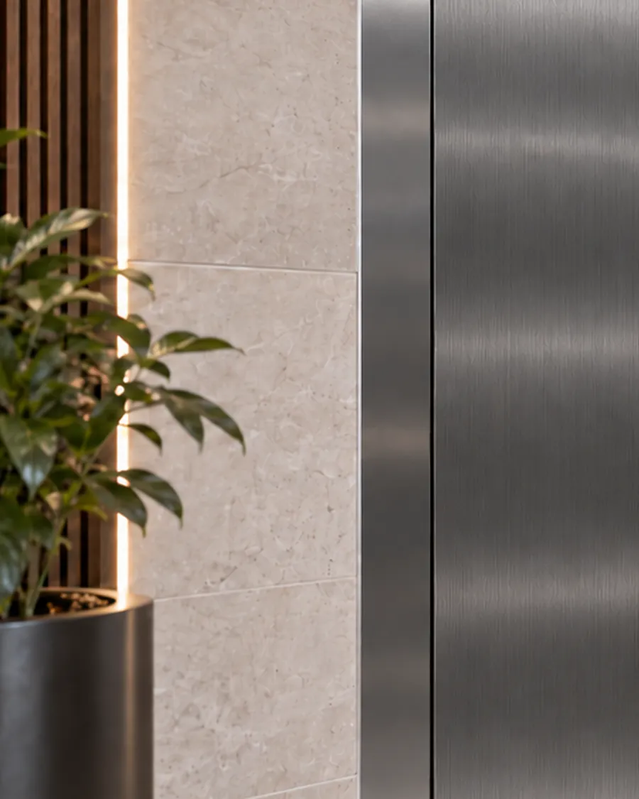
02Elevadores
-
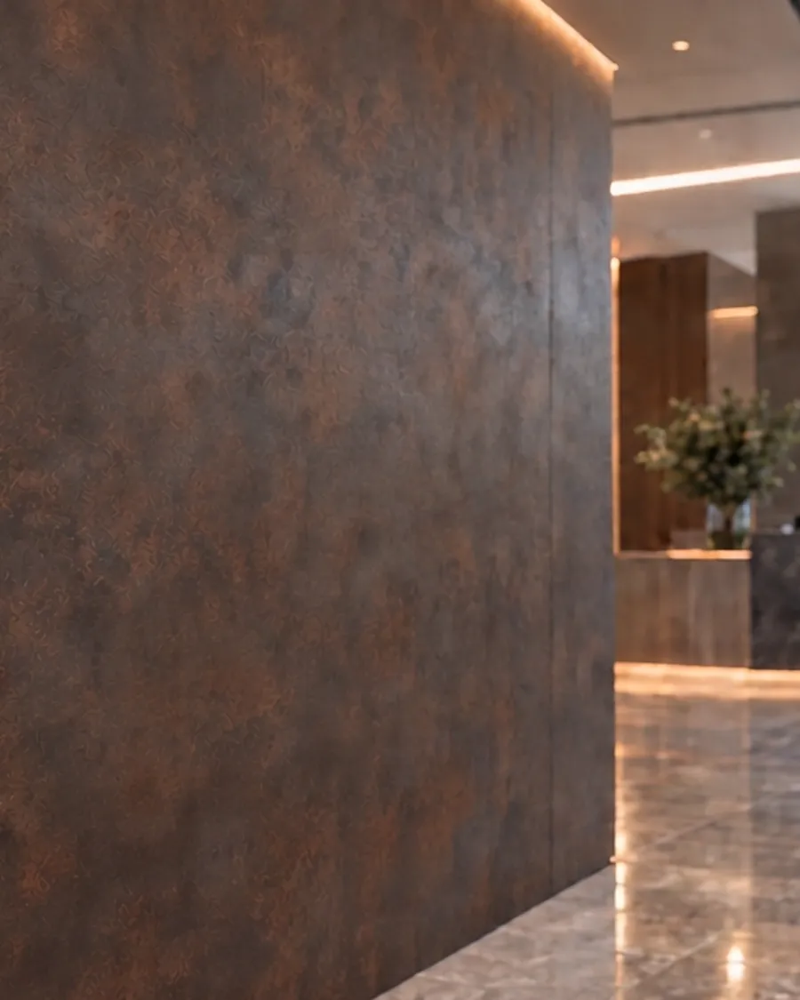
03Paredes
-
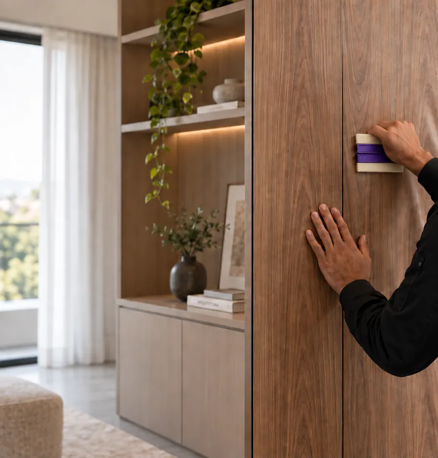
04Mobiliário
-
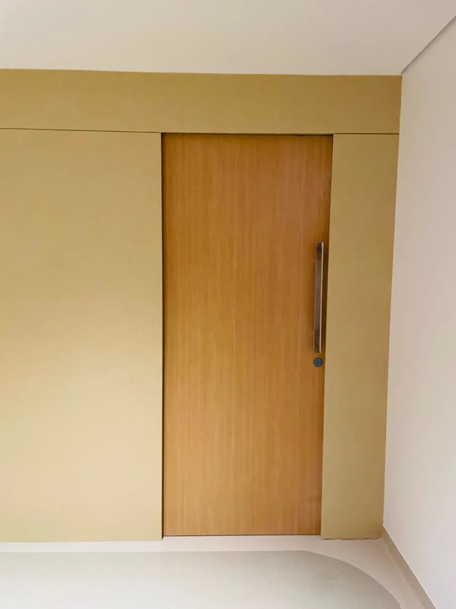
05Portas
-
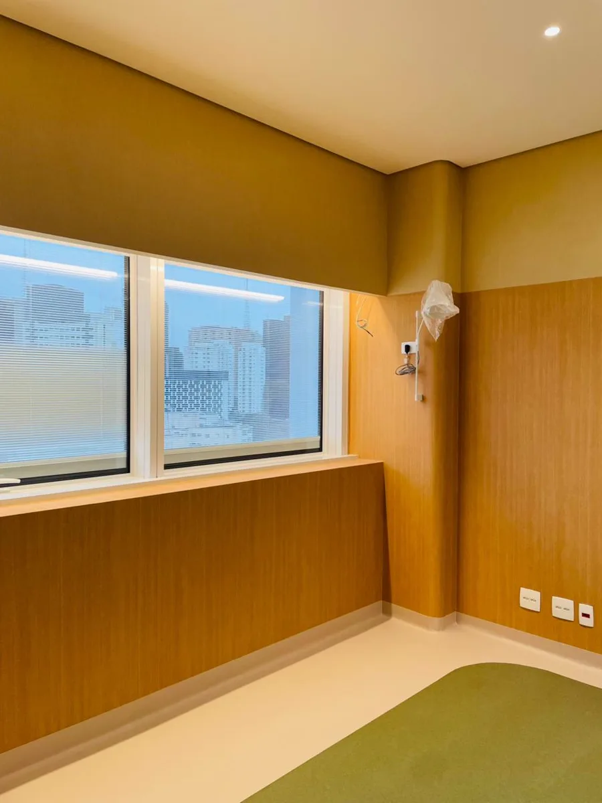
06Curvas e volumes
Projeto real • Transformação técnica
A forma também faz parte da transformação.
O estado original já mostra o desafio: curvas, cantos arredondados e transições que exigem leitura técnica, preparação correta e precisão na aplicação. Com o revestimento arquitetônico 3M™ DI-NOC™, a superfície ganha continuidade visual, acabamento uniforme e uma nova percepção de valor, sem descaracterizar a geometria do elemento.
Quando a base é complexa, a execução precisa estar à altura.
Perguntas frequentes
Não necessariamente. O revestimento adere bem à maioria das superfícies lisas e não porosas, como metal, madeira, vidro interno e laminados de alta pressão. A compatibilidade do substrato deve ser avaliada antes da aplicação.
Normalmente não é necessário desmontar toda a estrutura — muitos elementos podem ser revestidos no local. Casos específicos são avaliados durante a análise do projeto.
O tempo varia conforme a área, a superfície e o acabamento escolhido. Um prazo estimado é informado após a avaliação do projeto.
Sim. Portas, móveis, marcenaria, painéis, colunas e elevadores estão entre as aplicações do revestimento arquitetônico, respeitando as condições técnicas de cada peça.
Sim. A linha 3M™ DI-NOC™ reúne famílias de madeira, metal, pedra, concreto, têxtil e outras texturas. A disponibilidade de cada padrão deve ser consultada.
A superfície é analisada, limpa e preparada tecnicamente antes da aplicação — a qualidade da preparação impacta diretamente o resultado final.
A aplicação costuma gerar menos resíduo e interrupção do que uma reforma convencional, mas o volume exato depende da extensão do projeto.
Sim. Atendemos ambientes corporativos, hotelaria, varejo e retrofit, além de projetos residenciais.
Sim. Arquitetos, designers, construtoras e escritórios de especificação são um público prioritário da DYNEW.
Envie uma mensagem pelo WhatsApp com fotos, medidas aproximadas e o tipo de ambiente. A equipe DYNEW orienta os próximos passos.
Não. Trata-se de uma família de acabamentos arquitetônicos com diferentes padrões e aplicações. A indicação depende do produto e da superfície.
Não. Cada acabamento possui limitações, substratos compatíveis e condições de aplicação.
Não necessariamente. Tela, iluminação e fotografia alteram a percepção. A seleção final deve considerar amostra física e disponibilidade.
O valor depende do acabamento, da área, da superfície e do projeto. Solicite uma avaliação.
Vamos avaliar a superfície do seu projeto.
Envie fotos, medidas aproximadas e o tipo de ambiente. A DYNEW orientará os próximos passos.
Cada projeto começa pela análise técnica da superfície.
Tenha fotos, medidas aproximadas e o tipo de ambiente em mãos.
A DYNEW atua na execução especializada de revestimentos arquitetônicos. Não operamos como loja de películas ou escritório de design de interiores.